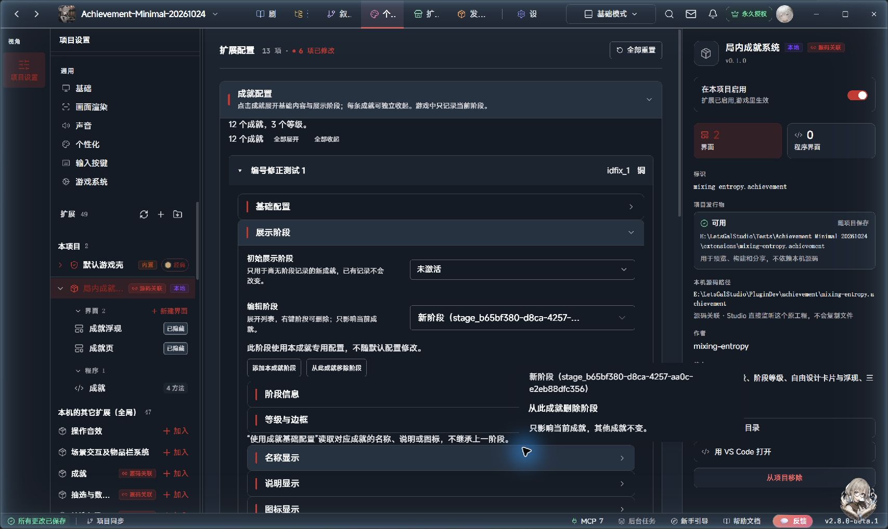
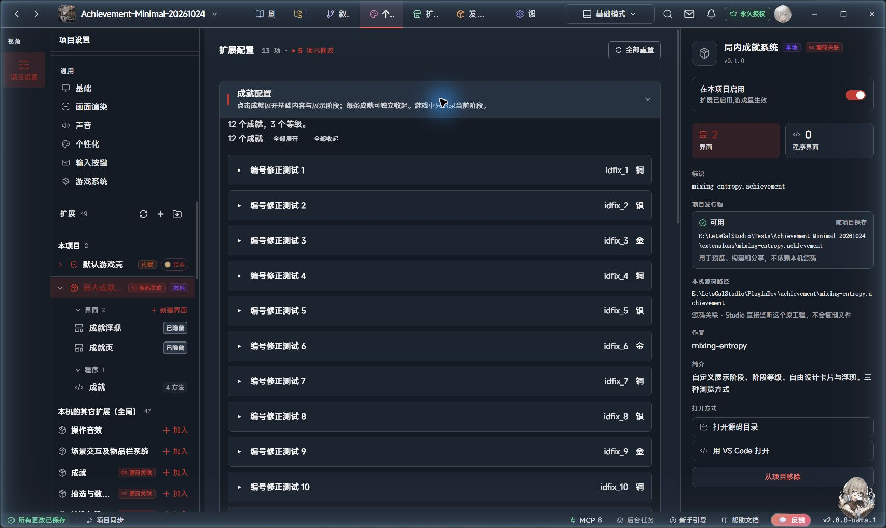
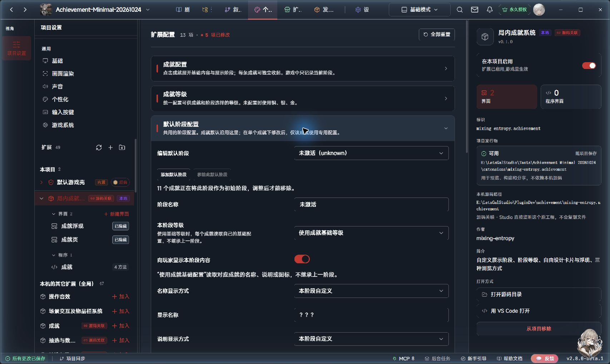
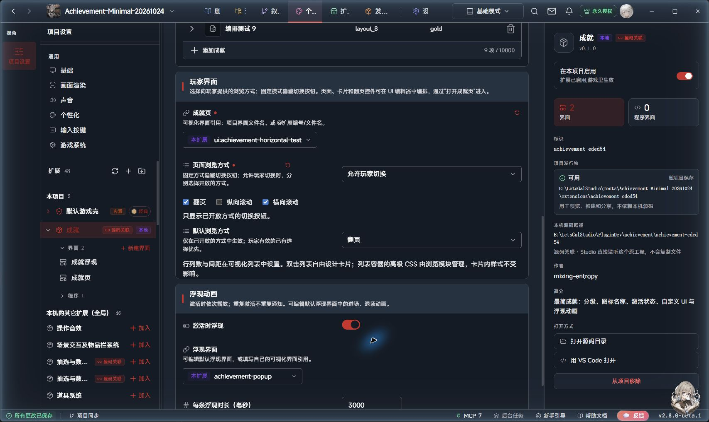
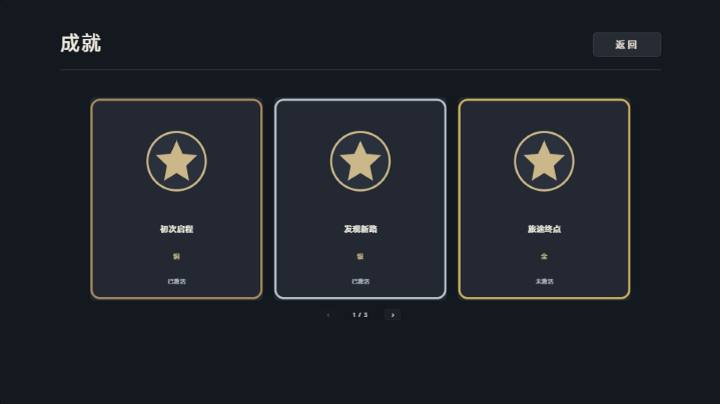
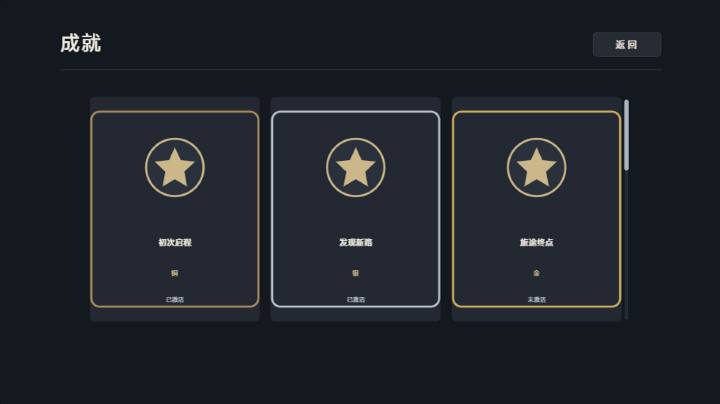
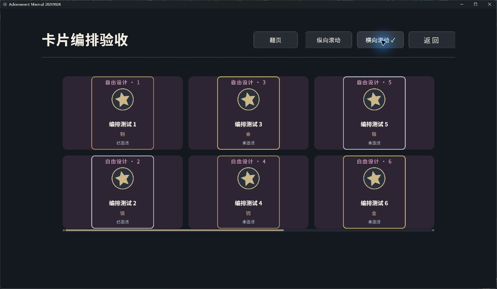

局内成就系统使用说明
版本 0.1.1。适用 LetsGal Studio 2.8.0-beta.1。本版采用展示阶段模型，不兼容 0.1.0 的激活方法与记录格式；升级前请备份工程，再按“数据、存档和更新”重新接入。
这个版本能做什么
每个成就只有一个当前展示阶段。默认提供“隐藏”“未激活”“已激活”，它们都是普通预设名称；创作者可以改名、修改内容或添加中间阶段。没有额外的“是否激活”开关，也不会根据铜银金推断达成历史或自动升级。
成就提供编号、基础名称、说明、图标和等级；阶段决定当前显示内容、是否入库、使用哪个等级。卡片和浮现跟随同一阶段。成就页支持翻页、纵向滚动和横向滚动；创作者选择固定方式或开放哪些方式给玩家。默认提供铜银金边框，页面、卡片和浮现均可设计。
定义与阶段配置保存在扩展结构化设置，当前阶段记录保存在官方 profile 数据表。自动写官方作者表、自定义属性组、Wiki、鉴赏、进度、分组系列、奖励助力和限时挑战仍未提供。条件、监听与宏由外部系统决定，本插件不增加条件编辑器。
安装和启用
- 在 Studio 的个性化面板导入 mixing-entropy.achievement 文件夹。使用成品选复制导入，持续开发选关联源码工程。
- 将“局内成就系统”加入项目并启用。
- 在数据表面板为“成就展示阶段记录”依赖使用新版模板创建并绑定。契约 letsgal.achievement.states 2.0.0，保存范围 profile，初始表为空。必需字段只有 achievementId、stageId，均为文本；行 id 由宿主生成。
- 打开“剧本 → 扩展 → 局内成就系统”的独立配置页，添加成就并设置其展示阶段。
旧 1.x 记录表不能直接绑定新版。没有需要保留的测试数据时，可保留旧表作备份，再从新版模板创建空表并绑定。需要保留既有阶段时，先备份工程与存档，原位更新表契约和 schema，保留表编号与 profile 范围；本版不提供自动迁移工具。仅删除表格中的 active 列不会解除旧 schema 的必填约束。
从隐藏到提示，再到完整展示
- 在“新成就编号”填 first_step，点击“添加成就”，展开“基础配置”，填写：名称“初次启程”，说明“故事从此时开始”，等级 bronze，图标选择作品图片。
- 展开“初次启程”，在它下方的“展示阶段”里，把初始展示阶段设为“隐藏”。新玩家的成就库没有这张卡片。
- 点击“添加本成就阶段”，展开“阶段信息”，名称填“获得线索”，开启“向玩家显示本阶段内容”；展开“名称显示”和“说明显示”，选“本阶段自定义”，分别填“远方的邀请”“去车站看看吧”。图标、等级与边框按需要配置。
- 获得线索的剧情中添加“成就操作”：先选“初次启程”，目标阶段选“获得线索”。需要提示玩家时勾选“切换时浮现”。卡片和浮现均显示线索内容。
- 事件完成后再添加同一方法，目标选择“已激活（revealed）”。默认显示基础名称、说明、图标与等级；不需要再执行一次激活。
- 若后期需要升级，新增例如“大师”阶段并给它指定 gold 等级，剧情直接切到该阶段。系统只保存当前阶段，不额外记一套激活事实或自动补齐低等级记录。
阶段编号稳定，改名不会改变编号。方法块可下拉选择成就和阶段，也可按编号或变量指定。需要限制跳转时，展开“仅在此阶段执行”，指定预期当前阶段；不符则整项跳过。目标必须存在，不按列表顺序自动“加一”。
阶段下拉框跟随所选成就，只列出它实际拥有的阶段，不混入其他成就的自定义阶段。初始默认提供隐藏、未激活、已激活三个共用阶段；修改默认配置或为此成就移除阶段后，选项跟随实际配置。已移除或不属于该成就的旧阶段编号只在旁边提示，不作为选项；请重新选择，系统不会擅自改写原参数。使用变量指定成就时，编辑器无法提前确定运行时取值，仍按阶段编号或变量填写。
成就列表与默认阶段配置
“成就配置”区域和每条成就都能折叠。条目默认收起，只显示名称、编号和等级；点击标题展开后，基础名称、说明、图标、等级以及展示阶段都在这条成就内配置。上方提供“全部展开／全部收起”，新添加的成就自动展开。折叠只改变编辑器显示，不影响玩家状态。
基础配置、展示阶段及阶段内的阶段信息、等级与边框、名称显示、说明显示、图标显示、内容预览均可分别折叠，初次显示时收起；玩家界面与浮现动画区域也可折叠。点击段标题可反复展开／收起，内容和配置值保留。
展开“编辑阶段”下拉列表，右键要移除的阶段，选择“从此成就删除阶段”。操作只影响右键点中的阶段和当前成就，不要求先选中它。“编辑默认阶段”列表同样支持右键“删除默认阶段”，影响沿用它的成就，已建立的专用配置保留。菜单显示作用范围；初始阶段和最后一个可用阶段会禁用删除并说明原因。原有移除按钮继续可用。

新成就编号可以自填，也可留空自动生成。创建后编号固定用于剧情引用；修改名称不会改编号。成就等级放在独立的可折叠区域中统一维护。

“默认阶段配置”是共用设置，初始提供下表三个阶段。这里修改阶段名称、显示内容或等级，会影响仍沿用它的成就；添加默认阶段后，各成就都可使用。每个阶段使用“成就基础配置”时，分别读取所属成就自己的名称、说明、图标或等级。
在某条成就内修改某个阶段，会建立该阶段的完整专用配置，不再随共用配置变化；其他成就不变。点击“恢复使用默认配置”后，该阶段重新沿用当前共用设置。“添加本成就阶段”只增加该成就可选的阶段。
“从此成就移除阶段”只让当前成就不再使用它，方法下拉框也不再列出；其他成就仍可使用。被移除的默认阶段可通过“恢复已移除的默认阶段”找回。“向玩家显示本阶段内容”只决定可见性，关闭后仍是可供方法切换的隐藏阶段，与移除阶段不同。
“移除此默认阶段”会从共用配置中移除该阶段，已经建立完整专用配置的成就仍保留自己的版本。当前作为初始阶段的选项须先更换初始阶段，最后一个可用阶段不能直接移除。默认配置为空时使用内置三个预设，不表示禁用所有阶段。

配置展示阶段
| 默认预设 | 编号 | 默认表现 |
|---|
| 隐藏 | hidden | 没有卡片、不浮现 |
| 未激活 | unknown | 问号名称、问号说明、未知图标、中性边框 |
| 已激活 | revealed | 使用成就基础名称、说明、图标和等级 |
这些名称不触发特殊规则。“已激活”可以改名为“完成”或其他名称，仍只是一个阶段。可以在默认阶段配置中统一修改，或在单个成就下面单独修改；共用阶段与专用阶段各最多 10000 行。
| 设置 | 作用 |
|---|
| 初始展示 | 尚无记录时使用，默认未激活；已有记录不随此项变动 |
| 阶段名称 | 供创作者辨认，可选择向玩家提供 |
| 向玩家显示本阶段内容 | 关闭后不进入成就页、不浮现 |
| 名称／说明显示方式 | 使用成就基础配置、本阶段自定义、不显示 |
| 图标显示方式 | 使用成就基础配置、本阶段自定义、默认未知图标、不显示 |
| 本阶段等级 | 使用成就基础等级，或指定本阶段等级 |
| 展示等级与边框 | 控制玩家看到等级文字和等级边框，不改变可查询的当前等级 |
| 向玩家提供阶段名称 | 开启后提供 stageName；是否放到卡片上仍由 UI 决定 |
“使用成就基础配置”读取上方成就配置中的原名称、说明或图标，不继承上一阶段。“本阶段自定义”留空就是空，不回退到基础内容。基础说明可换行、最多 1000 字符。
新增阶段自动生成稳定编号。共用阶段和本成就阶段都可按上述范围移除，当前初始阶段不能直接移除。已有记录指向被移除阶段时隐藏，直到明确切到有效阶段；新增阶段不会复用被删除编号。
方法块
| 方法 | 配置 | 结果 |
|---|
| 成就操作 | 成就、目标展示阶段、切换时浮现；可选预期当前阶段 | 切换阶段并自动刷新 |
| 读取成就信息 | 成就、阶段编号／阶段名称／等级编号／等级名称 | 返回文本，可用于条件比较 |
| 打开成就页 | 无 | 刷新后打开已配置的页面 |
| 刷新成就界面数据 | 无 | 仅重建界面数据，通常自动执行 |
读取阶段／等级优先比较编号，如 revealed、gold；名称适合展示。读取等级不受“是否向玩家公开等级”限制。没有“读取激活状态”选项。未知成就或不存在的目标阶段报错；被移除的当前阶段仍可读到保存编号，名称和等级为空。
“切换时浮现”默认开启，但还受全局通知开关和阶段可见性控制。重复设置相同阶段不重复通知；切回先前阶段属于新变化，可以浮现。浮现只通知当前阶段，不补播过去经过的阶段。
刷新一般无需手动添加：阶段切换和打开成就页都会刷新。两个蓝色内部界面入口继续隐藏，页面编辑和扩展设置选用仍保留。世界状态只需在条件成立时调用“成就操作”，本扩展不实现条件组或监听。
成就与页面配置
成就编号应稳定且唯一；改名称时保留编号。编号使用字母、数字、点、横线、下划线，以字母或数字开头，最长 128 字符。等级不配置时使用 bronze、silver、gold；自定义列表非空时替代默认等级，需要包含所有仍在使用的等级编号。基础图标留空时使用默认星形。
展开“玩家界面”选择成就页和浏览方式，展开“浮现动画”选择浮现界面并设置通知参数。浮现总开关为“启用浮现通知”，每条浮现时长默认 3000 毫秒，允许 300–60000 毫秒。翻页、纵向及横向滚动的开放方式和 UI 编排见下文。
自己设计 UI
在个性化的成就扩展下展开界面，编辑“成就页”。页面结构可自由修改；选中“成就列表”，进入其内部 card 模板，可修改单个成就的背景、边框、图标和文字。默认使用 5 列、2 行、间距 24 的分页布局，每页最多十张卡片；可以自行修改行列和间距。
在“成就配置 → 玩家界面 → 页面浏览方式”中，直接选择一种固定方式，或选择“允许玩家切换”并勾选要开放的方式。例如只勾选翻页、横向滚动，玩家就看不到纵向滚动按钮。固定方式或只勾选一种时，全部模式切换按钮隐藏，浏览操作仍可使用。配置页不能取消最后一种方式。
三种方式共用同一份卡片模板。列表的列数、行数和间距决定一屏如何编排：纵向先排满一行再向下延伸，横向先排满一列再向右延伸。横向支持鼠标滚轮、横向滚动输入和底部滚动条；列表获得键盘焦点后也可用左右键、Home、End。每张卡片内部的文字、图片、边框、按钮、数据绑定及高级 CSS 保留。
以下是同版 Studio 的真实配置页与固定模式预览。固定模式的页面没有模式切换按钮。



以下独立 Player 示例使用创作者修改过的双行卡片：新增“自由设计”文字、旋转图标及自定义底色，切换模式继续使用同一模板。

列表容器本身的高级 CSS 由浏览模块管理，卡片内部的高级 CSS 可自由编辑。将 achievement-list 保持为页面顶层的卡片列表，避免放进普通分组；当前 Studio 2.8 的分组内智能模板入口有限制。调整位置和大小直接操作列表即可。横向实现适配当前宿主的列表结构，升级宿主后应核对实际滚动；未知结构会在扩展日志提示，并保留纵向列表。
浏览选择保存在同一玩家档案的 browseMode 界面偏好中，与阶段记录分开。固定方式不采用也不清除旧偏好；某种方式关闭后，旧选择暂不采用，重新开放后仍可恢复。自制页面保留数据列表标识符 achievement-list。需要玩家切换时添加相应按钮：achievement-mode-pagination（翻页）、achievement-mode-scroll（纵向）、achievement-mode-horizontal（横向）。控制器自动绑定点击，无须增加宏或剧情方法。按钮位置、外观可自行编排。通过“打开成就页”进入；修改作者设置后重开页面应用。
默认页面已包含三个可隐藏按钮；旧项目自制页若要开放横向切换，添加横向按钮即可，无需重做卡片模板。缺少 achievement-list 标识符时不接管页面；直接使用官方“显示界面”只展示作者原页面，不会应用本模块的模式选择和横向适配。
数据列表来源固定为 ext:mixing-entropy.achievement.entries。设置名称字段 name、副文字字段 stageName、图片字段 icon。阶段名称默认不公开，默认副文字控件也隐藏；是否显示由创作者决定。成就自己的说明使用独立文字元素绑定 {{item.description}}，两者可以同时显示。条目可用占位符：
| 占位符 | 内容 |
|---|
| {{item.title}} / {{item.name}} | 当前阶段允许展示的名称 |
| {{item.description}} | 当前阶段允许展示的说明 |
| {{item.image}} / {{item.icon}} | 当前阶段选择的图标；不显示时为空 |
| {{item.levelName}} | 阶段允许时为等级名称，否则为空 |
| {{item.stageId}} | 当前阶段编号 |
| {{item.stageName}} | 阶段允许公开时为阶段名称，否则为空 |
| {{item.id}} | 成就编号 |
| {{item.frame}} | 默认等级边框图片 |
玩家列表已按当前阶段过滤和取值。隐藏阶段不进入列表，阶段不展示等级时使用中性边框。自制卡片沿用这些字段，不从作者原配置补出被遮盖内容。
默认卡片在名称下方预留约两行说明。长说明需要在 card 模板中扩大文字框、调整字号或卡片尺寸。已有自制模板不会自动增加文字元素，添加文本并填写 {{item.description}} 即可；三种浏览方式共用这个模板。默认浮现通知也能显示同一份说明，具体编排见下文。
金银铜按 bronze、silver、gold 编号给出不同边框，其他编号使用中性边框。可以移除边框图片或自行设计条目外观。entries 是只供界面显示的临时投影，不应手动写入；修改它不会改变真实阶段记录。
使用另一张自制成就页时，在配置中选中该页，并通过“打开成就页”进入。若直接使用官方“显示界面”动作，则应先执行“刷新成就界面数据”；这种打开方式只展示页面，不绑定翻页／滚动切换按钮。当前界面选择项只支持可视化 UI 文档，不支持程序界面或系统槽位。
编辑“成就浮现”可以改变位置、大小、背景和进场退场动画。自制浮现页面保留下列控件标识符：achievement-name（名称文字）、achievement-level（等级文字）、achievement-icon（图片）；achievement-frame 可选，用于默认等级边框颜色。缺少某个标识符时，该控件不会自动填值。
浮现说明与成就卡片读取同一展示阶段，无需再填写一份。在“个性化 → 局内成就系统 → 界面 → 成就浮现”中选择“成就说明”文字控件：想显示就保留，想隐藏就使用编辑器的隐藏开关，也可以直接删除；位置、大小、字号、颜色及进退场动画均可自由设置。隐藏或删除说明不会改变卡片上的说明，也不会影响后续通知。
自制浮现页增加一个文本元素，标识符／引用名设为 achievement-description。它由控制器自动填入当前展示阶段的说明，文字内容可留空；不要使用列表专用的 {{item.description}} 占位符。原有自制浮现没有这个控件时照常工作。内容为空时显示空文字，固定模板不会自动收缩；需要紧凑布局可自行调整底板和其它控件。
以下为此前说明候选的 Studio 实测截图，展示说明控件的布局。当前版本按阶段提供内容。
通知不阻塞剧情点击。队列等待前一张界面关闭再显示下一张；游戏运行结束时清空队列并关闭正在播放的通知。浮现失败不会撤销已保存的阶段记录。排队通知在播放前重新读取阶段；正在播放的通知也跟随阶段内容更新，切到隐藏会关闭。可选 achievement-stage 控件显示允许公开的阶段名称；achievement-label 显示“成就展示已更新”。作者设定的控件隐藏、样式和排版保持。
数据、存档和更新
每条运行记录为 achievementId 与 stageId，宿主另提供行 id；同一成就只有一条记录。配置和展示投影不保存第二份状态。profile 让同一玩家档案的所有存档共享当前阶段；读取旧存档不回退阶段。明确切换到更早阶段会改变共享记录。
本版取消旧 activate、deactivate、is-active、set-display-stage、get-display-stage、operate、read-info 方法。旧剧情必须改用本版四个入口；旧 active-only 记录不自动换算。已有阶段记录仍可保留，但绑定表必须符合 2.0.0 契约。自制 UI 移除 active/status 绑定，按需换成 stageId/stageName。
修改成就名称、说明、图标、等级不清除阶段。临时移除定义保留记录，重新加入相同编号可继续读取。改编号相当于新成就，本版没有编号迁移工具。阶段删除不会自动揭晓基础内容。
本版的模型、共用／专用阶段、删除守卫、队列、浏览与运行模拟共 48 项检查通过，类型检查和双入口构建通过。Studio 已验证阶段显示、浮现、动态方法选项、共用／专用阶段配置、分段折叠和单成就阶段右键删除。新阶段模型未验收独立 Player、普通／快速存读档、应用冷重开和导出；既有版本的播放器证据不能替代本次直接升级验证。
常见问题
| 现象 | 处理 |
|---|
| 状态表不兼容 | 使用新版 2.0.0 契约与 profile 模板；不要沿用 active 必填的旧表 |
| 卡片仍为问号 | 当前阶段仍为未激活；将其切到需要展示的阶段 |
| 库中没有卡片 | 检查当前阶段可见性，或其配置是否已移除 |
| 没有浮现 | 检查全局通知、切换时浮现、重复阶段、隐藏阶段、快进和 UI 引用 |
| 等级不存在 | 自定义等级列表会替代默认列表，需保留被引用的等级 |
| 自制页没有内容 | 调用打开成就页，并核对列表来源与标识符 |
| 读旧档后阶段回退 | 核对绑定表是否为 profile，archive/session 不具备跨档保存语义 |
AI 指南辅助安装
运行 python tools/install-ai.py 默认只预览。在当前 Agent 有 letsgal-authoring 主技能时，配套知识安装到实际用户目录的 .letsgal-authoring/plugins/mixing-entropy.achievement/0.1.1；没有主技能时，才安装为独立 letsgal-plugin-achievement 技能。指定其它 Agent 可使用 --skills-root 与 --user-root。
确认预览目标后添加 --apply。相同内容重复执行不会覆盖；遇到同版本不同内容会停止并提示先比较保全。安装器不下载软件、不升级 Studio、不覆盖主技能。文件安装成功不等同于 Agent 已发现并使用技能。